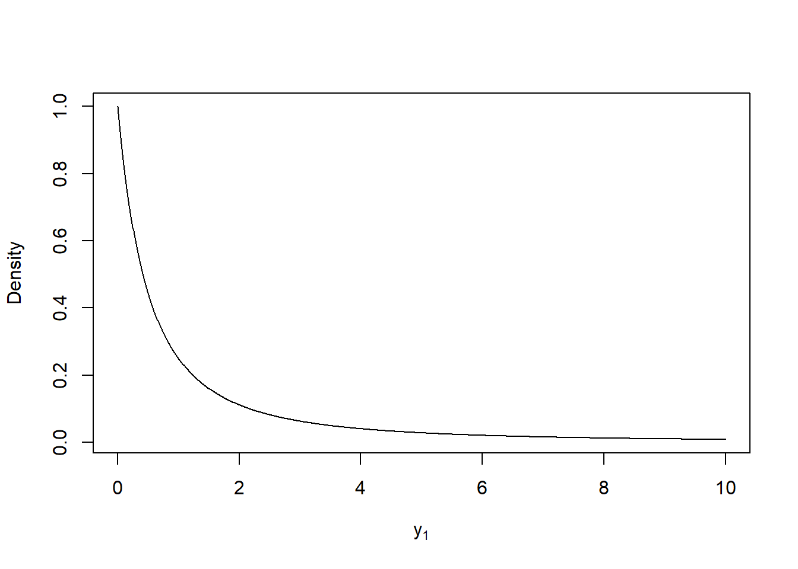
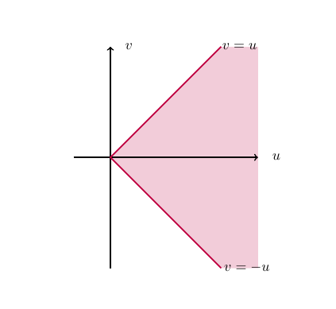

Chapter 14 Transformations of random variables
14.1 Introduction
In this section we will consider transformations of random variables. Transformations are useful for:
- Simulating random variables.
For example, computers can generate pseudo random numbers which represent draws from \(U(0,1)\) distribution and transformations enable us to generate random samples from a wide range of more general (and exciting) probability distributions.
- Understanding functions of random variables.
Suppose that £\(P\) is invested in an account with continuously compounding interest rate \(r\). Then the amount £\(A\) in the account after \(t\) years is
\[ A=P \text{e}^{r t}. \] Suppose that \(P=1,000\) and \(r\) is a realisation of a continuous random variable \(R\) with pdf \(f(r)\). What is the p.d.f. of the amount \(A\) after one year? i.e. What is the p.d.f. of
\[ A=1000 \text{e}^{R}? \]
We will consider both univariate and bivariate transformations with the methodology for bivariate transformations extending to more general multivariate transformations.
14.2 Univariate case
Suppose that \(X\) is a continuous random variable with p.d.f. \(f(x)\). Let \(g\) be a continuous function, then \(Y=g(X)\) is a continuous random variable. Our aim is to find the p.d.f. of \(Y\).
We present the distribution function method which has two steps:
- Compute the c.d.f. of \(Y\), that is
\[F_Y(y)=P(Y \leq y).\] - Derive the p.d.f. of \(Y\), \(f_Y(y)\), using the fact that
\[f_Y(y)=\dfrac{dF_Y(y)}{dy}.\]
Square of a Standard Normal
Let \(Z\sim N(0,1)\). Find the p.d.f. of \(Y=Z^2\).
Now \(\frac{d}{dz} F_Z(z) = \frac{1}{\sqrt{2\pi}} e^{-\frac{z^2}{2}}\), so
Thus \(Y \sim {\rm Gamma} \left( \frac{1}{2},\frac{1}{2} \right)\), otherwise known as a Chi-squared distribution with \(1\) degree of freedom. :::
14.3 Bivariate case
Suppose that \(X_1\) and \(X_2\) are continuous random variables with joint p.d.f. given by \(f_{X_1,X_2}(x_1,x_2)\). Let \((Y_1,Y_2)=T(X_1,X_2)\). We want to find the joint p.d.f. of \(Y_1\) and \(Y_2\).
Jacobian
Suppose \(T:(x_1,x_2) \rightarrow (y_1,y_2)\) is a one-to-one transformation in some region of \(\mathbb{R}^2\), such that \(x_1 = H_1(y_1,y_2)\) and \(x_2 = H_2(y_1,y_2)\). The Jacobian of \(T^{-1}=(H_1,H_2)\) is defined byTransformation of random variables.
Let \((Y_1,Y_2)=T(X_1,X_2)\) be some transformation of random variables. If \(T\) is a one-to-one function and the Jacobian of \(T^{-1}\) is non-zero in \(T(A)\) whereif \((y_1, y_2) \in T(A)\), and \(0\) otherwise.
Transformation of uniforms.
Let \(X_1 \sim U(0,1)\), \(X_2 \sim U(0,1)\) and suppose that \(X_1\) and \(X_2\) are independent. LetFind the joint p.d.f. of \(Y_1\) and \(Y_2\).
Figure 14.1: Transformation
Transformation of Exponentials.
Suppose that \(X_1\) and \(X_2\) are i.i.d. exponential random variables with parameter \(\lambda\). Let \(Y_1 = \frac{X_1}{X_2}\) and \(Y_2=X_1+X_2\).
- Find the joint p.d.f. of \(Y_1\) and \(Y_2\).
- Find the p.d.f. of \(Y_1\).
Attempt Example 14.3.4: Transformation of Exponentials and then watch Video 22 for the solutions.
Video 22: Transformation of Exponentials
Solution to Example 14.3.4
Remember from previous results that \(Y_2 = X_1 + X_2 \sim {\rm Gamma} (2,\lambda)\).
- Since \(X_1\) and \(X_2\) are i.i.d. exponential random variables with parameter \(\lambda\), the joint p.d.f. of \(X_1\) and \(X_2\) is given by
\[\begin{align*} f_{X_1,X_2}(x_1,x_2) &= f_{X_1}(x_1)f_{X_2}(x_2) \\[3pt] &= \begin{cases} \lambda e^{-\lambda x_1} \lambda e^{-\lambda x_2}, & \text{if } x_1,x_2 > 0, \\ 0, & \text{otherwise.} \end{cases} \\[3pt] &= \begin{cases} \lambda^2 e^{-\lambda(x_1+x_2)}, & \text{if } x_1,x_2 > 0, \\ 0, & \text{otherwise.} \end{cases} \end{align*}\] Solving simultaneously for \(X_1\) and \(X_2\) in terms of \(Y_1\) and \(Y_2\), gives \(X_1=Y_1X_2\) and
\[Y_2 = X_1+X_2 = Y_1X_2 + X_2 = X_2(Y_1+1).\] Rearranging gives \(X_2 = \frac{Y_2}{Y_1+1} (=H_2 (Y_1,Y_2))\), and then \(X_1 = Y_1X_2 = \frac{Y_1Y_2}{Y_1+1} (=H_1 (Y_1,Y_2))\).
Computing the Jacobian of \(T^{-1}\), we get
\[\begin{align*} J(y_1,y_2) &= \begin{vmatrix} \frac{\partial H_1}{\partial y_1} & \frac{\partial H_1}{\partial y_2} \\ \frac{\partial H_2}{\partial y_1} & \frac{\partial H_2}{\partial y_2} \end{vmatrix} \\[3pt] &= \begin{vmatrix} \frac{y_2}{(y_1+1)^2} & \frac{y_1}{y_1+1} \\ -\frac{y_2}{(y_1+1)^2} & \frac{1}{y_1+1} \end{vmatrix} \\[3pt] &= \frac{y_2}{(y_1+1)^3} + \frac{y_1y_2}{(y_1+1)^3} \\[3pt] &= \frac{y_2}{(y_1+1)^2}. \end{align*}\]
Now,
Therefore, \(T(A) \subseteq \left\{(y_1, y_2):y_1>0, y_2>0\right\}\). Since \(x_1>0\) and \(x_2>0\), \(y_1=\frac{x_1}{x_2}>0.\) Furthermore, since \(x_1=\frac{y_1y_2}{y_1+1}>0\), then \(y_1y_2>0\) implies \(y_2>0\). Therefore,
Consequently, the joint p.d.f. of \(Y_1\) and \(Y_2\), \(f=f_{Y_1,Y_2}(y_1,y_2)\) is given by
If either \(y_1<0\) or \(y_2<0\), then \(f_{Y_1,Y_2}(y_1,y_2)=0\).
- The p.d.f. of \(Y_1\) is the marginal p.d.f. of \(Y_1\) coming from the joint p.d.f \(f_{Y_1,Y_2}(y_1,y_2)\). Therefore, for \(y_1 >0\),
\[\begin{align*} f_{Y_1}(y_1) &= \int_0^{\infty} \lambda^2 e^{-\lambda y_2} \frac{y_2}{(1+y_1)^2} dy_2 \\ &= \frac{1}{(1+y_1)^2} \int_0^{\infty} \lambda^2 y_2 e^{-\lambda y_2} dy_2 \\ &= \frac{1}{(1+y_1)^2}. \end{align*}\] (In the above integration remember that \(\lambda^2 y_2 e^{-\lambda y_2}\) is the p.d.f. of \({\rm Gamma} (2,\lambda)\).)
So,
\[ f_{Y_1}(y_1) = \begin{cases} \frac{1}{(1+y_1)^2} & \text{if } y_1>0, \\[3pt] 0 & \text{otherwise.} \end{cases} \] The distribution \(Y_1\) is an example of a probability distribution for which the expectation is not defined.
Figure 14.2: Plot of the p.d.f. of \(Y_1\).
Note that one can extend the method of transformations to the case of \(n\) random variables.
Student Exercise
Attempt the exercise below.
Let \(X\) and \(Y\) be independent random variables, each having probability density function
\[ f(x) = \begin{cases} \lambda e^{-\lambda x} & \text{if } x>0, \\ 0 & \text{otherwise} \end{cases} \]
and let \(U=X+Y\) and \(V=X-Y\).
- Find the joint probability density function of \(U\) and \(V\).
- Hence derive the marginal probability density functions of \(U\) and \(V\).
- Are \(U\) and \(V\) independent? Justify your answer.
Solution to Exercise 14.1.
- Let the transformation \(T\) be defined by \(T(x,y)=(u,v)\), where \(u=x+y\) and \(v=x-y\). Then, \(x=\frac{1}{2} (u+v)\) and \(y={1\over2}(u-v)\), so that
\[ J(u,v)=\left| \begin{matrix} \frac{1}{2} & \frac{1}{2} \\ \frac{1}{2} & -\frac{1}{2} \end{matrix} \right| = -\frac{1}{2}.\] Since \(X\) and \(Y\) are independent,
\[ f_{X,Y}(x,y)=f_X(x)f_Y(y)= \begin{cases} \lambda^2e^{-\lambda(x+y)} & \text{if }x,y>0, \\ 0&\text{otherwise.} \end{cases} \] Thus, since \(T\) is one-to-one,
\[\begin{eqnarray*} f_{U,V}(u,v) &=& f_{X,Y}(x(u,v),y(u,v))|J(u,v)| \\ &=& \begin{cases} \frac{1}{2} \lambda^2e^{-\lambda u} & \text{if } u+v > 0, u-v > 0, \\ 0 & \text{otherwise} \end{cases} \\ &=& \begin{cases} \frac{1}{2} \lambda^2e^{-\lambda u} & \text{if } u > 0,-u < v < u, \\ 0 & \text{otherwise.} \end{cases} \end{eqnarray*}\] The region over which \(f_{U,V}(u,v)>0\) is shown below.
 - The marginal pdf’s of \(U\) and \(V\) are respectively
\[\begin{eqnarray*} f_U(u) &=& \int_{-\infty}^\infty f_{U,V}(u,v) dv = \begin{cases} \int_{-u}^u{1\over2} \lambda^2e^{-\lambda u} dv = \lambda^2u e^{-\lambda u} & \text{if }u>0,\\ 0 & \text{otherwise;} \end{cases} \\ f_V(v) &=& \int_{-\infty}^\infty f_{U,V}(u,v) du = \int_{|v|}^\infty \frac{1}{2} \lambda^2e^{-\lambda u}du = \frac{1}{2} \lambda e^{-\lambda|v|}, \qquad v\in{\mathbb R}. \end{eqnarray*}\] Note that again we have \(U =X+Y\) is the sum of two independent \({\rm Exp}(\lambda)\) random variables, so \(U \sim {\rm Gamma} (2, \lambda)\).
- Clearly, \(f_{U,V}(u,v)=f_U(u) f_V(v)\) does not hold for all \(u,v \in {\mathbb R}\), so \(U\) and \(V\) are not independent.